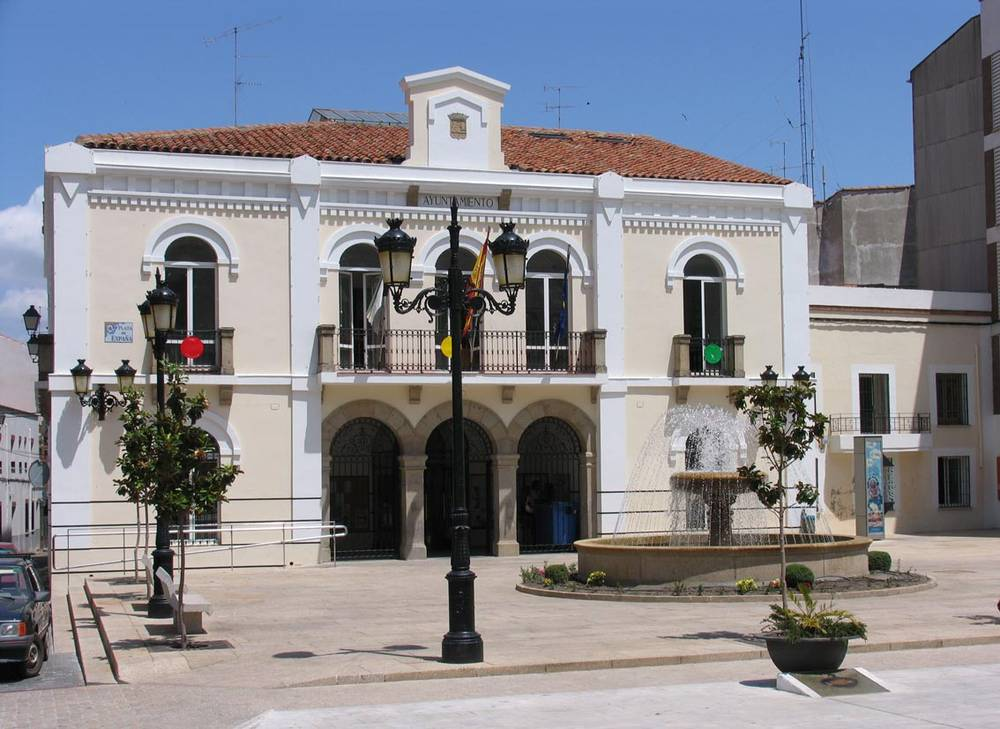

스페인 나발모랄데라마타시 '시 건물 지붕 태양광 에너지공동체' 입찰에 1개사만 응찰…예정가 515만 유로·16년 계약

전기 공급·태양광·에너지공동체 조성과 운영, 시 건물 지붕 사용허가를 한 계약으로 묶어…콕스 에네르히아를 유일 응찰자로 받아 기술 평가 중
스페인 엑스트레마두라 지방 카세레스주의 나발모랄데라마타(Navalmoral de la Mata)시가 시 건물 지붕을 활용해 에너지공동체를 만들려고 낸 입찰에 한 회사만 응찰했다. 이 입찰은 전력망 전기와 태양광 전기 공급, 투자를 포함한 에너지공동체 조성·관리 서비스, 시 건물 지붕의 공유재산 사용허가를 하나로 묶은 혼합 계약으로, 시의회 승인을 거쳐 9월 중순 절차가 시작됐다. 입찰위원회는 콕스 에네르히아 코메르시알리사도라 에스파냐(Cox Energía Comercializadora España)의 행정 서류와 기술 제안을 열어 요건을 갖췄다고 보고 유일 응찰자로 받아들였으며, 시 담당 부서의 기술 평가 보고서가 나오면 위원회를 다시 열어 절차를 이어 간다. 예정가는 부가세를 빼고 515만6,517.11유로이고, 계약 기간은 설치 1년과 운영 15년을 합쳐 16년이다. 시장은 사업을 처음 내놓으며 이 돈이 태양광 패널을 사는 620만 유로가 아니라 16년 동안의 초기 투자·발전·전기 공급·유지·운영을 모두 담은 통합 에너지 관리 예산이라며 "시가 에너지를 만들고 사고 관리하는 방식을 바꾸고 있다"고 말했다. 지붕 수와 설비 용량, 주민 참여 방식은 알려지지 않았다.
시민에너지 관점
공공건물 지붕을 에너지공동체의 터로 내놓은 것은 의미가 있지만, 투자와 운영을 한 회사에 16년 동안 통째로 맡기고 응찰자마저 한 곳뿐이라면 그 공동체의 주인이 누구인지 따져 봐야 한다. 영국 런던 브릭스턴에서는 2012년 주민 협동조합 브릭스턴 에너지가 구청 소유 공공임대주택 단지 지붕에 주민 출자로 태양광을 올리고 이익 일부를 지역에 돌렸다. 주민이 돈을 모으고 운영하기엔 사업이 너무 크다는 걱정이 있겠지만, 지붕을 여러 묶음으로 나누거나 계약에 주민 출자 몫과 이익 공유 조건을 넣으면 민간의 기술과 주민 소유를 함께 살릴 수 있다. 국내 지자체도 공공건물 지붕을 내줄 때 사용료만 받는 데 그치지 말고 주민 출자와 이익 공유를 입찰 조건에 넣어야 한다.
출처: Hoy 2026-11-04 Miguel Ángel Marcos(미겔 앙헬 마르코스) 원문 보기
スペイン・ナバルモラル・デ・ラ・マタ市の「市庁舎屋根の太陽光エネルギー共同体」入札、応札は1社のみ…予定価格515万ユーロ・16年契約
電力供給・太陽光・エネルギー共同体の設立と運営、市の建物の屋根の使用許可を一つの契約に…コックス・エネルヒアを唯一の応札者として受理し技術評価中
スペイン・エストレマドゥーラ地方カセレス県のナバルモラル・デ・ラ・マタ（Navalmoral de la Mata）市が、市の建物の屋根を使ってエネルギー共同体をつくるために行った入札に、応札したのは1社だけだった。この入札は、系統電力と太陽光電力の供給、投資を含むエネルギー共同体の設立・管理サービス、市の建物の屋根の公有財産使用許可を一つにまとめた混合契約で、市議会の承認を経て9月中旬に手続きが始まった。入札委員会はコックス・エネルヒア・コメルシアリサドラ・エスパーニャ（Cox Energía Comercializadora España）の行政書類と技術提案を開封し、要件を満たしているとして唯一の応札者として受理した。市の担当部署による技術評価の報告書が出た後、委員会を再び開いて手続きを進める。予定価格は付加価値税抜きで515万6,517.11ユーロ、契約期間は設置1年と運営15年を合わせた16年だ。市長は事業を発表した際、これは太陽光パネルを買うための620万ユーロではなく、16年間の初期投資・発電・電力供給・保守・運営をすべて含む総合的なエネルギー管理の予算だとし、「市がエネルギーをつくり、買い、管理するやり方を変えている」と述べた。屋根の数や設備容量、住民の参加方法は明らかになっていない。
市民エネルギーの視点
公共建物の屋根をエネルギー共同体の場として差し出したことには意味があるが、投資と運営を16年にわたり1社に丸ごと任せ、しかも応札者が1社だけとなれば、その共同体の主は誰なのかを問わなければならない。英ロンドンのブリクストンでは2012年、住民協同組合ブリクストン・エナジーが区所有の公営住宅団地の屋根に住民の出資で太陽光を載せ、利益の一部を地域に還元した。住民が資金を集めて運営するには事業が大きすぎるという懸念もあろうが、屋根をいくつかのまとまりに分けたり、契約に住民出資の枠と利益共有の条件を入れたりすれば、民間の技術と住民の所有を両立させられる。韓国の自治体も、公共建物の屋根を貸し出す際に使用料を受け取るだけで終わらせず、住民出資と利益共有を入札条件に盛り込むべきだ。
出典: Hoy（オイ） 2026-11-04 Miguel Ángel Marcos（ミゲル・アンヘル・マルコス） 原文を読む
西班牙纳瓦尔莫拉尔德拉马塔市"市政建筑屋顶太阳能能源社区"招标仅一家企业投标…预算515万欧元、合同16年
把电力供应、太阳能、能源社区组建与运营及市政建筑屋顶使用许可捆绑为一份合同…考克斯能源被接纳为唯一投标人，技术评估中
西班牙埃斯特雷马杜拉地区卡塞雷斯省的纳瓦尔莫拉尔德拉马塔（Navalmoral de la Mata）市为利用市政建筑屋顶组建能源社区而发起招标，结果只有一家企业投标。这次招标是一份混合合同，把电网电力和太阳能电力供应、包括投资在内的能源社区组建与管理服务，以及市政建筑屋顶的公有财产使用许可捆绑在一起，经市议会批准后于9月中旬正式启动。招标委员会拆开考克斯能源西班牙售电公司（Cox Energía Comercializadora España）的行政文件和技术方案，认定其符合要求，接纳其为唯一投标人；待市政相关部门出具技术评估报告后，委员会将再次开会推进程序。招标预算为515万6,517.11欧元（不含增值税），合同期16年，包括建设1年和运营15年。市长在推出该项目时表示，这不是买太阳能板的620万欧元，而是涵盖16年间初始投资、发电、供电、维护和运营的综合能源管理预算，并说"我们正在改变市政府生产、购买和管理能源的方式"。屋顶数量、装机容量和居民参与方式均未公布。
市民能源视角
把公共建筑屋顶拿出来作为能源社区的场地是有意义的，但如果投资和运营在16年里整个交给一家企业，而且投标者只有一家，就必须追问这个社区的主人究竟是谁。英国伦敦布里克斯顿在2012年由居民合作社布里克斯顿能源以居民出资在区政府所有的公共租赁住宅小区屋顶安装太阳能，并把部分收益回馈当地。也许有人担心项目太大、居民难以集资运营，但只要把屋顶分成若干批次，或在合同中写入居民出资份额和收益共享条件，就能兼顾民间技术与居民所有。韩国地方政府在出借公共建筑屋顶时，也不应只收使用费了事，而应把居民出资和收益共享写进招标条件。
来源: Hoy（今日报） 2026-11-04 Miguel Ángel Marcos（米格尔·安赫尔·马科斯） 查看原文
Only one bidder for Spanish town Navalmoral de la Mata's municipal-roof solar energy community tender, worth 5.16 million euros over 16 years
Single contract bundles grid and solar supply, setting up and running an energy community, and use of municipal building roofs; Cox Energía admitted as sole bidder while its technical offer is assessed
Only one company has bid in a tender launched by the town of Navalmoral de la Mata, in the province of Cáceres in Spain's Extremadura region, to create an energy community using the roofs of municipal buildings. The tender is a mixed contract combining grid and solar electricity supply, services to set up and manage an energy community including investment, and a public-property concession for municipal roofs; the procedure formally began in mid-September after approval by the town council. The contracting committee opened the administrative documents and technical proposal of Cox Energía Comercializadora España, found that they met the requirements and admitted the company as the sole bidder, and will meet again once the town's technical departments deliver an assessment report. The base tender budget is 5,156,517.11 euros excluding VAT, for a 16-year contract made up of one year of installation and 15 years of operation. When presenting the project, the mayor said this was not 6.2 million euros to buy solar panels but the budget for an integrated energy management model covering initial investment, solar generation, supply, maintenance and operation over 16 years, adding: "We are changing the way the town council produces, buys and manages its energy." The number of roofs, installed capacity and how residents would take part have not been disclosed.
Citizen Energy View
Offering public roofs as the base for an energy community matters, but when investment and operation are handed wholesale to one company for 16 years, and only one company even bids, it is fair to ask who really owns that community. In Brixton, London, the residents' co-operative Brixton Energy put solar panels on the roofs of a council housing estate in 2012 with money raised from local people and returned part of the surplus to the area. Some will say such a project is too large for residents to finance and run, but splitting roofs into several lots, or writing a residents' investment share and benefit-sharing terms into the contract, can combine private expertise with local ownership. Korean local governments, too, should not settle for a usage fee when they open public roofs, but make resident investment and benefit sharing a condition of the tender.
Source: Hoy 2026-11-04 Miguel Ángel Marcos Read the original